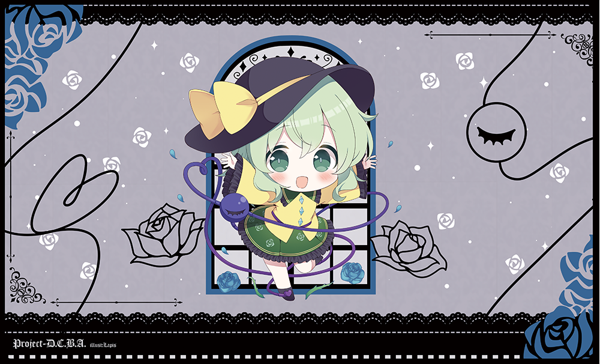

古明地こいしのプレイマット
青いバラに黒いレース。小窓から、こいしがひょっこり。


作品情報
- イラスト
- らぴぃす様
- サイズ
- 横50 cm × 縦30 cm
- 表面
- ポリエステル
- 裏面
- ラバー（滑り止め加工）
折らずに受け取りたい方は、注文前にBOOTHの商品説明で配送方法を確認してください。
絵柄の見どころ
地霊殿を思わせる小窓から、デフォルメ姿の古明地こいしが顔をのぞかせています。無邪気な笑顔のかたわらには、閉ざした瞳のモチーフ。可愛いだけではない、どこか影のあるこいしを描いた一枚です。
左右に咲くバラの線画と、上下を飾る黒いレースが、額縁のようにこいしを囲みます。地霊殿やEXステージを連想させるモチーフをちりばめて、目指したのは「ゴシック＆カワイイ」！